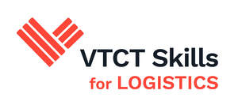

Trade Mark Journal No.2025/048 28 November 2025
UK00004298828 21 November 2025 (16,41)

- Class 16
- Printed matter; newspapers; magazines; periodical publications; journals; reports; leaflets; printed publications; books; education, instructional and teaching materials; instructional teaching materials; manuals; educational course materials; dictionaries; encyclopaedia; stationary; certificates; diplomas; parts and fittings for all of the aforesaid goods.
- Class 41
- Education; providing of training; academic, professional and vocational education; academic, professional and vocational training; personal development training; provision of education training and teaching services; arranging and conducting workshops, conferences, seminars, symposiums, award shows and events; arranging and conducting educational courses; arranging and conducting examinations; arranging and conducting educational qualifications; arranging and conducting distance learning and correspondence courses; provision of vocational training courses; provision of on-line educational and teaching services including on-line seminars, on-line workshops and on-line courses; awarding of qualifications; accreditation of professional competency; providing training and educational examination for certification purposes; accreditation of educational achievement; provision of skills assessment courses; provision of vocational skills training; educational assessment services; entertainment; sporting and cultural activities; academic, professional and vocational education and training in the fields of hair and beauty, hairdressing, barbering, make-up, beauty treatments, beauty therapies, cosmetic treatments, cosmetic therapies, aesthetic treatments, tanning, massages, complementary therapies and salon management; academic, professional and vocational education and training in the fields of personal training, exercise and fitness, yoga, sport and active leisure; academic, professional and vocational education and training in the fields of hospitality, catering, cooking, preparation and service of food and drink; academic, professional and vocational education and training in the fields of business, business studies, business administration, management and leadership, business management, digital technology, accounting, finance, financial trading and entrepreneurial skills; academic, professional and vocational education and training in the fields of travel and tourism, customer services, retail services, recruitment, first aid, health and safety, equality and diversity, team leading and sustainability; academic, professional and vocational education and training in the fields of child development, early years education, learning and development, education, health and social care, adult care, personal and social development; academic, professional and vocational education and training in the fields of transport and warehouse operations, warehousing and distribution, procurement, supply chain management, passenger transport, urban driving, LGV driving and international freight forwarding; academic, professional and vocational education in the field of engineering; academic, professional and vocational education in the field of digital technologies and artificial intelligence; English language education services; language courses; second language educational services; publication of books; publication of electronic books; publication of journals on-line; information, advisory and consultancy services in relation to all of the aforesaid.
Vocational Training Charitable Trust
Representative: Blake Morgan LLP